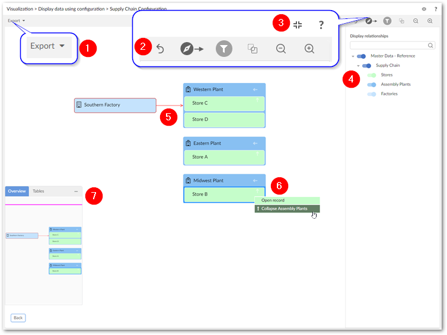
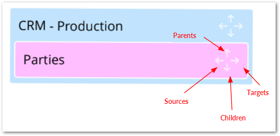
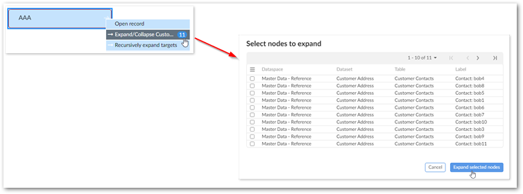

You can generate data value and relationship graphs after an administrator has created a configuration within the add-on that determines how graph elements display. When tables have multiple configurations, you may select the configuration to load.
When viewing graphs, you can:
Export a PDF, PNG, or SVG of the graph.
Expand the graph to fullscreen and zoom to change the magnification level.
Choose the orientation of the graph's nodes that use line relationships. The options for node orientation tell the add-on to put the source nodes in the selected position. Then it renders related nodes in the selected direction. For example, the Top-down option adds source nodes to the top of the graph and renders related nodes below.
Click and drag to change the orientation.
Expand/collapse nodes and view node and relationship details. You can access this option by right clicking on nodes. Depending on the available relationships and configuration, you can expand one node at-a-time, or expand all related nodes.
Use the Overview mini-map and Tables tab to re-orient the graph and see how styles are applied to tables, respectively. Additionally, you can move the box to a different corner of the graph by selecting its title bar and dragging.
The following image and table highlight the available features when viewing a data value graph:
It is not shown in the image above, but a double arrow displays to indicate nodes are linked multiple times using the same link.
1) | Export a PDF, PNG, or SVG of the current graph. |
2) | Undo your last action, change graph orientation, toggle the filter pane (shown), edit graph configuration options, and zoom. |
3) | Enter and exit fullscreen mode and select the '?' to view the documentation related to data value graphs. |
4) | In the filter pane, the search field allows you to search for data values in the graph. As you enter text in the field the list of nodes narrows to only those that include the entered text. Once you find the element you are looking for, select the node to center the graph on it. The filter pane also allows you to toggle display of nodes in the graph. |
5) | Selected nodes and relationships are highlighted in red. |
6) | Right-click nodes and relationships to expand their context menus. |
7) | Drag the mini-map in the Overview tab to re-orient the graph. You can also drag the box to any of the graph's four corners. The tables tab contains a legend to help you identify the tables containing the values displayed in the graph. |
An arrow icon on a node indicates the availability and display type of related nodes. Administrators set display types during configuration. As shown in the following image, a given node can hold up to four relationship types:
When you right-click a node or relationship, its related context menu displays and allows you to:
Expand any related nodes configured to display in this graph. When a node holds a relationship type to multiple nodes, you can expand them recursively in a given direction. For example, you might see the option to expand all of a node's targets. Nodes can expand recursively up to five levels deep.
Open the selected record, or show the link details.
If expanding related nodes would display 10 or more nodes, selecting the expand option displays a pop-up where you can choose the nodes that you want to expand. This behavior is shown below:
